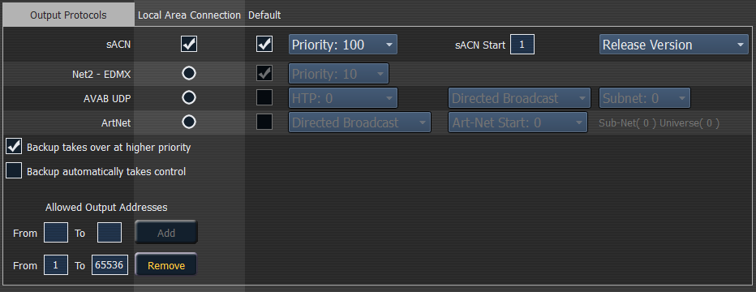

This is for selecting which protocols the desk will output and which ones are included in the default.

This sets the control priority and the starting address for sACN data from your console. The valid range for this setting is 1 (lowest) to 200 (highest). This is the reverse of EDMX.
Ion allows you to use any sACN universes from 1-63,999.The number of universes that can be used at a time is limited to a block of 256 contiguous universes. The address range equals 1 to 32,767,488, which is 63,999 times 512.
Ion and the Net3 Gateways support two versions of sACN, the draft version and the final ratified version. The ratified version is outputted by default unless this is selected.
This sets the control priority for EDMX data from this desk. The valid range for this setting is 20 (lowest) to 1 (highest). This is the reverse of sACN.
This sets the subnet for Avab UDP data from this desk. The priority levels range from 0-200. The default is 0, which is no priority level. 1 is the lowest priority level and 200 is the highest. When set to no priority level (0), the data will merge according to HTP.
A backup desk will receive its Avab UDP priority level from the primary. The backup will then output at one priority higher than the primary, unless the primary was set to the highest priority of 200.
This sets the subnet for ArtNet data from this desk. The valid ArtNet Start range for this setting is 0-255.
This enables the backup device in a multi-console system to take over at one priority higher than the master if the master goes offline.
Switches to the backup automatically if the primary should go offline.
A range or ranges of addresses that can be assigned to limit the number of output addresses. The default setting is to allow addresses 1 through 32767488.